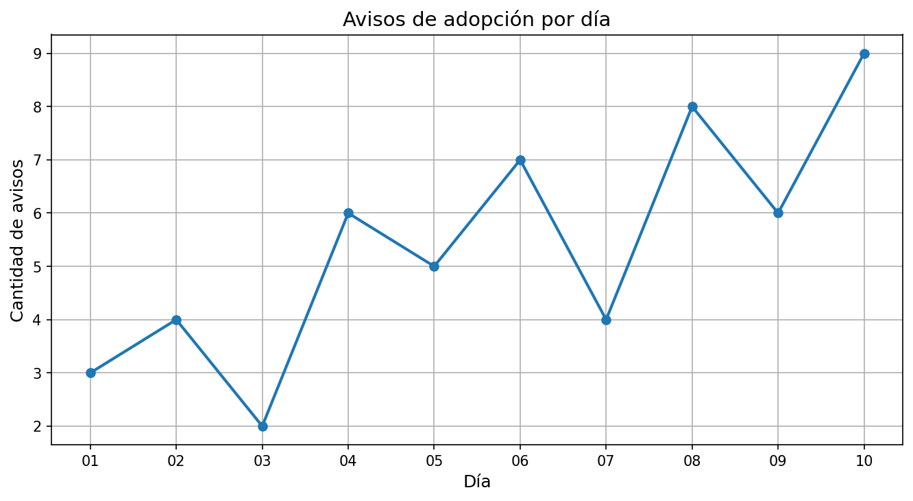
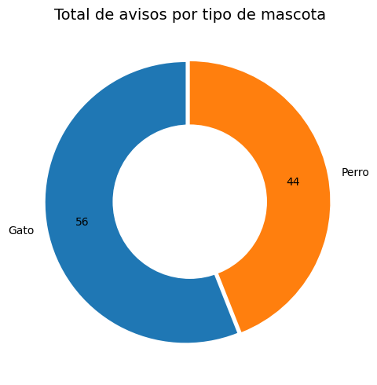
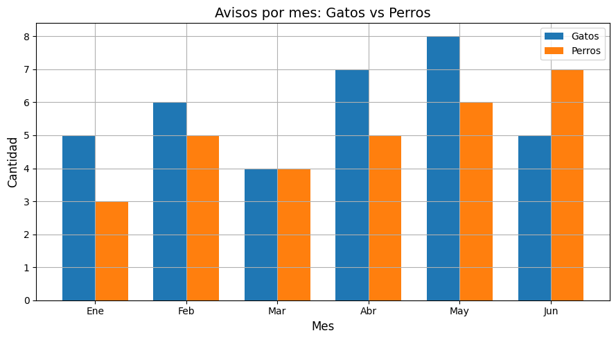

Estadísticas 📊
Visualización de las tendencias en adopciones de mascotas registradas en el sistema.
Gráfico 1: Avisos por fecha (últimos 10 días)

Gráfico 2: Total por tipo de mascota

Gráfico 3: Avisos por mes (Gatos vs Perros)
